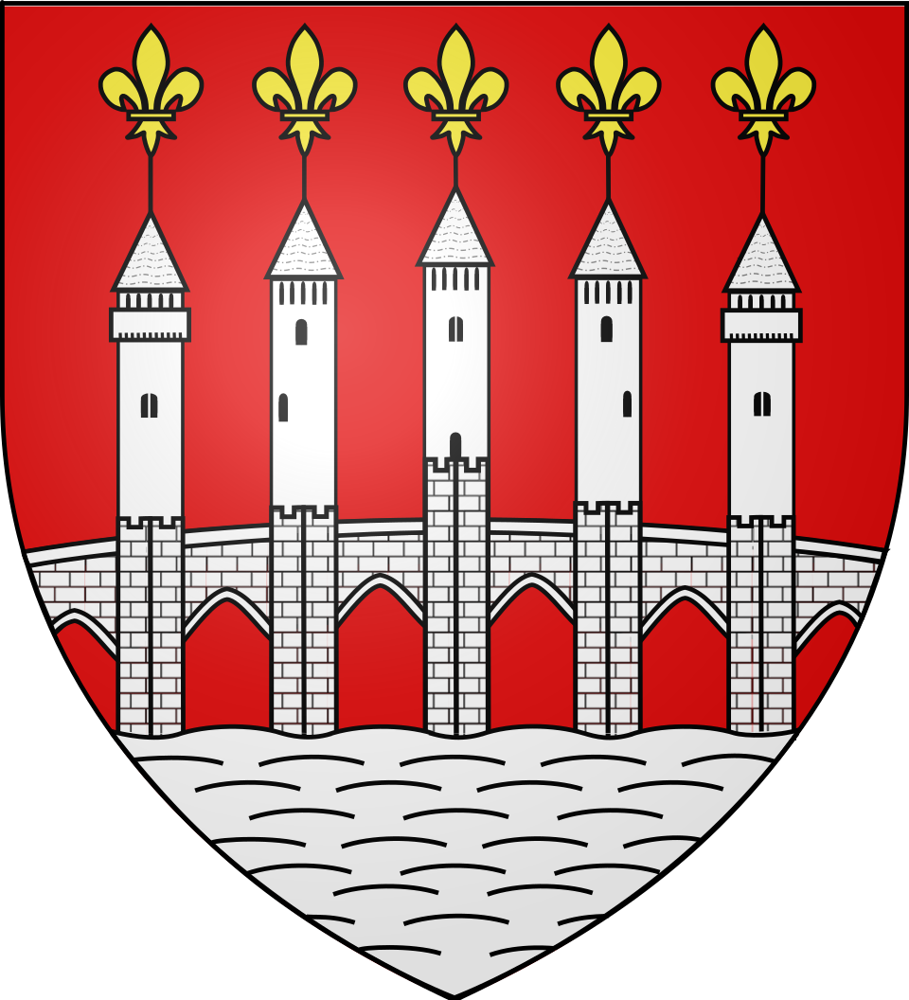
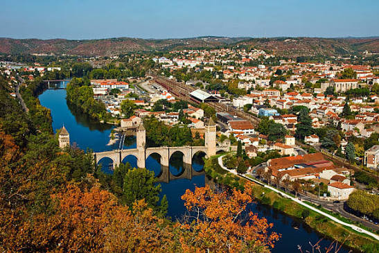

Cahors
le Pont Valentré


⟹ Préfecture du Lot, cité du Pont Valentré ⟸

Fondée par les Gaulois Cadurques autour d'une source sacrée dédiée à la déesse Divona, Cahors devient sous l'Empire romain la prospère Divona Cadurcorum. Bâtie au creux d'un méandre du Lot, la cité s'impose au Moyen Âge comme un puissant évêché et une place bancaire de renommée européenne : les « Cahorsins », marchands-banquiers lotois, prêtent alors dans toute la chrétienté, au point que Dante les cite en enfer aux côtés des usuriers.

Enfant de la ville, le pape Jean XXII y fonde en 1332 une université qui rayonnera près de quatre siècles. C'est aussi à cette époque, en pleine guerre de Cent Ans, que les consuls font édifier le pont Valentré pour verrouiller l'accès occidental de la cité : sa construction s'étalera de 1308 à 1380.
La légende raconte que l'architecte du pont, désespérant d'achever l'ouvrage à temps, aurait pactisé avec le diable — qui, floué à la livraison, envoie encore chaque nuit un lutin desceller une pierre de la tour centrale.
— Légende du diable du pont ValentréDevenue préfecture du Lot à la Révolution, Cahors a vu naître l'homme d'État Léon Gambetta en 1838. Aujourd'hui, la cité conjugue patrimoine médiéval remarquable, inscrit à l'UNESCO au titre des chemins de Saint-Jacques-de-Compostelle, et renommée viticole grâce à son célèbre vin noir.
Cahors donne son nom à l'un des plus anciens vignobles de France, planté dès l'époque gallo-romaine et vanté par l'évêque Saint-Didier dès le VIe siècle. Ce « vin noir », intense et charpenté, doit son caractère au Malbec, cépage dont Cahors est le berceau et qui doit y représenter au moins 70 % de l'assemblage. Ruiné par le phylloxéra puis relancé après le grand gel de 1956, il obtient l'AOC en 1971 et s'étend aujourd'hui sur une quarantaine de communes lotoises, entre vallée du Lot et causses du Quercy.
Cahors Blues Festival : chaque été depuis 1984, la ville accueille l'un des plus anciens festivals de blues d'Europe, avec des concerts jusque sur les quais du Lot.
Cahors Juin Jardins : au mois de juin, jardins éphémères et animations verdoyantes envahissent les rues et places du centre médiéval.
Alentours : le vignoble s'étend en aval le long du Lot, entre Mercuès, Luzech et Puy-l'Évêque ; le village perché de Saint-Cirq-Lapopie et la grotte préhistorique du Pech Merle, à une trentaine de kilomètres, complètent une découverte du Quercy.
Meilleure période : le printemps et l'été pour profiter des festivals et des balades le long du Lot ; les vendanges en septembre pour découvrir le vignoble en pleine activité.
Marché : mercredi et samedi matin sous les halles et sur la place Chapou, hauts lieux de la gastronomie quercynoise.
Se loger : hôtels et chambres d'hôtes dans le cœur médiéval ou au fil des domaines viticoles ; l'Office de Tourisme du Grand Cahors renseigne sur les visites guidées et les balades en gabare sur le Lot.